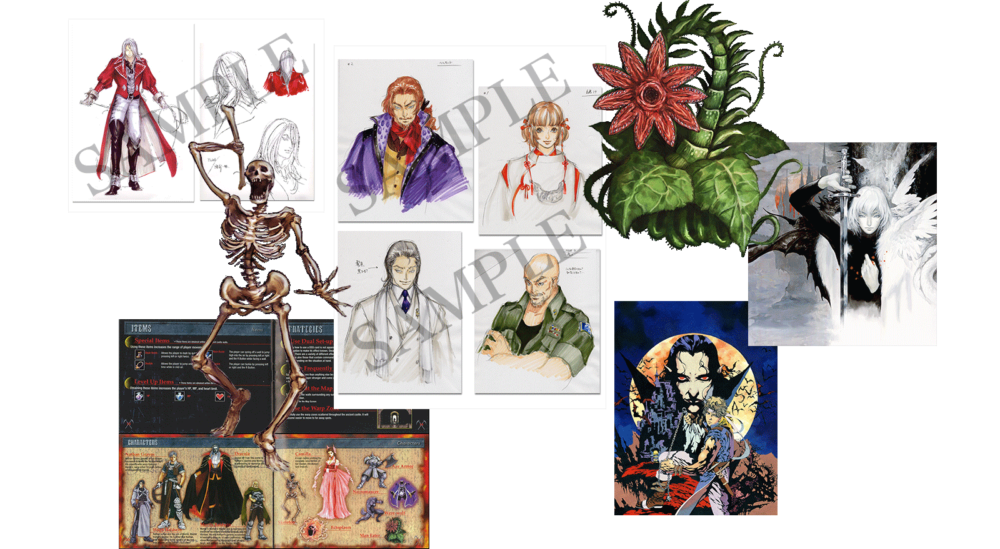
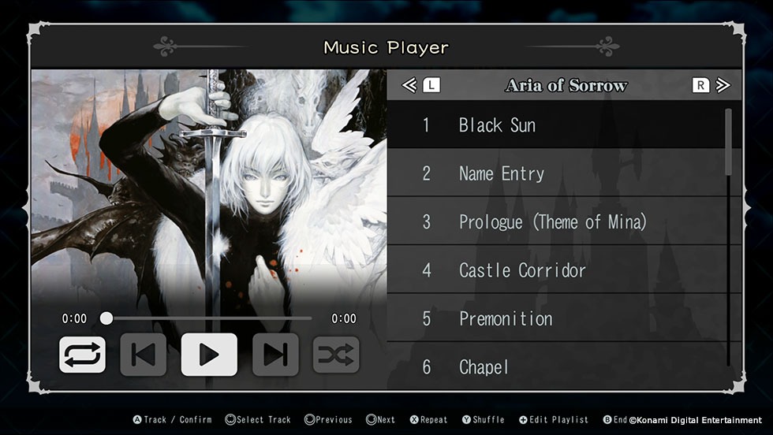
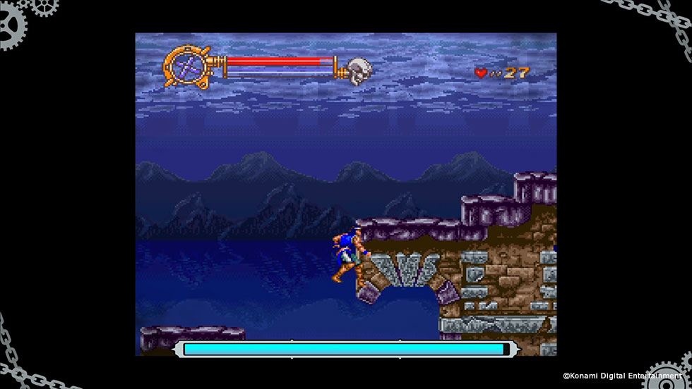
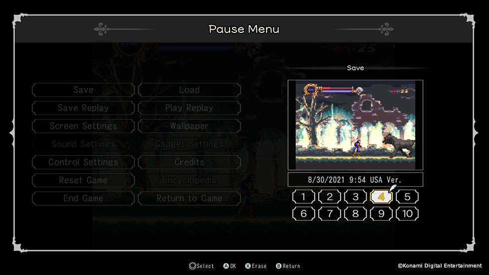
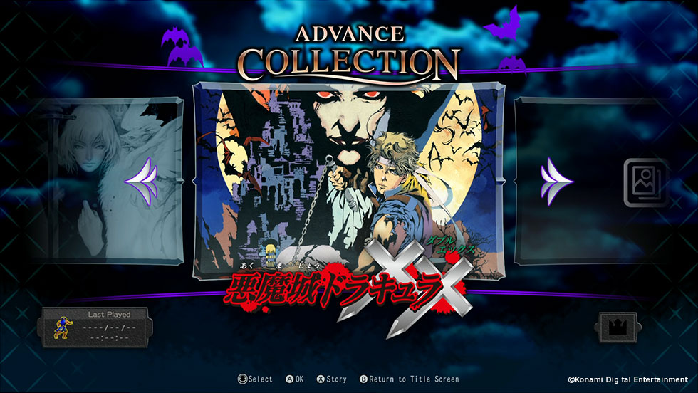
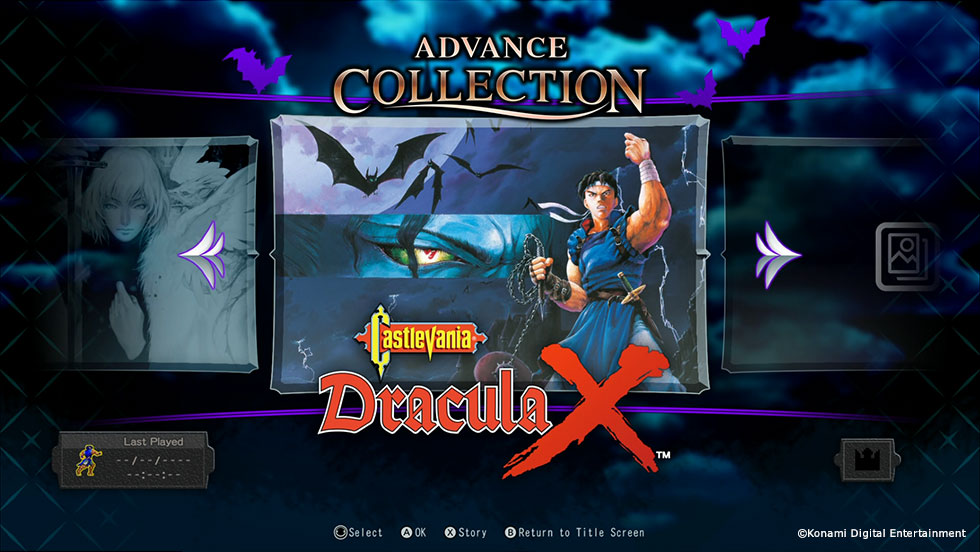
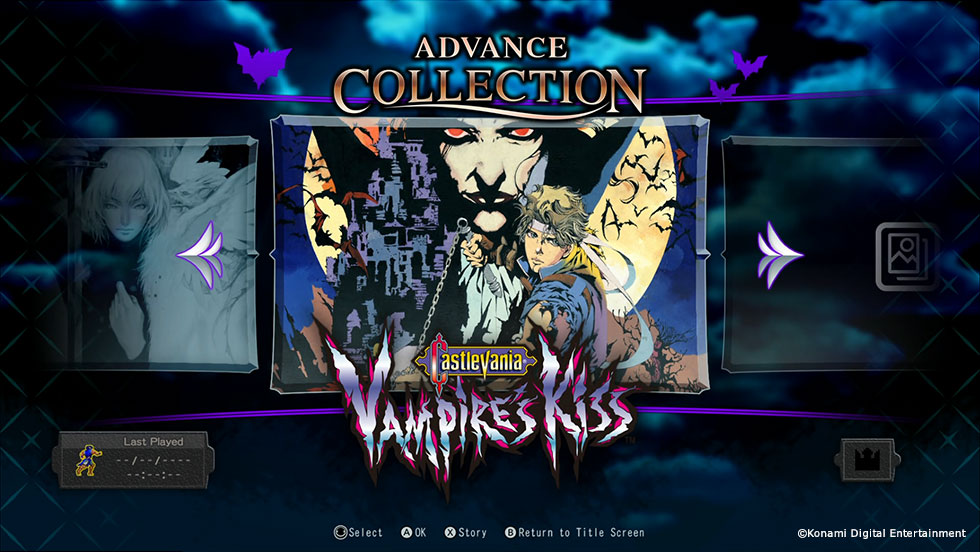
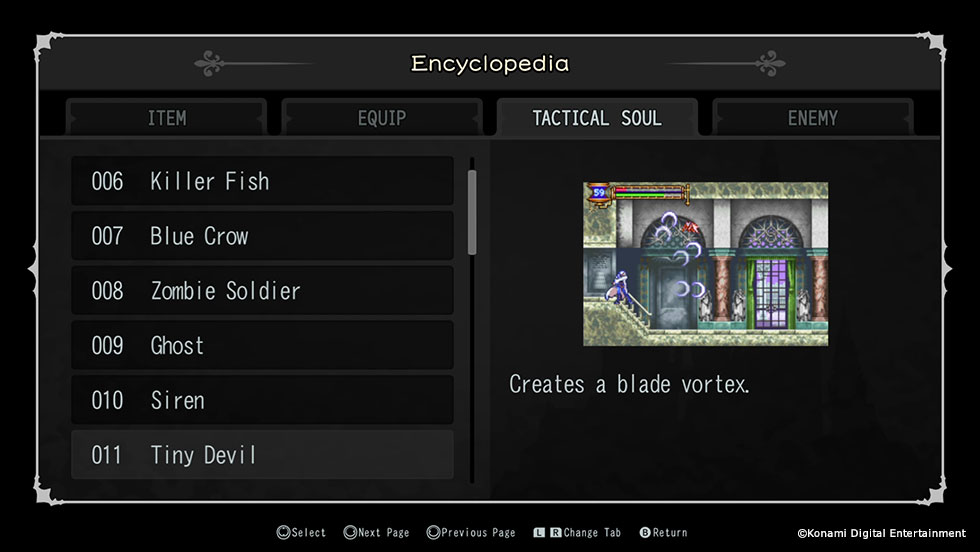
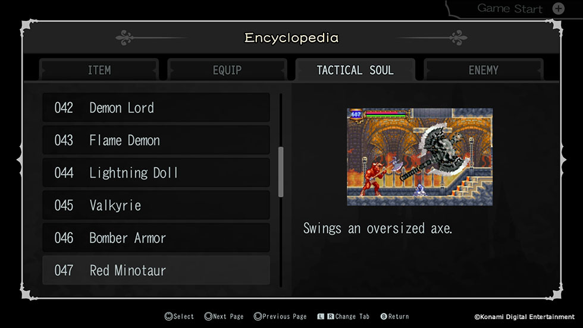
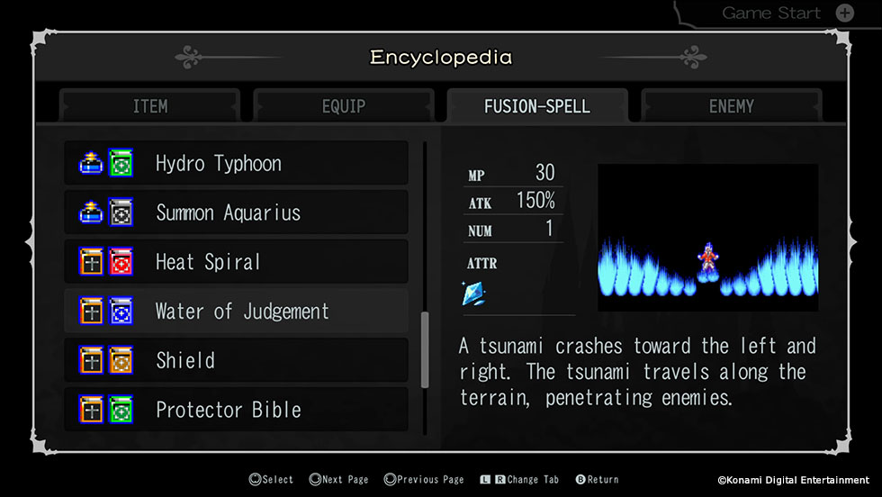

¡Únete a la lucha contra el mal en Castlevania Advance Collection, una compilación de obras maestras eternas de acción y exploración!
Además de los tres juegos legendarios de Castlevania que se lanzaron por primera vez a principios de la década de 2000, esta colección también incluye Castlevania: Dracula X y algunos bocetos e ilustraciones nunca antes vistos de los juegos. Los cuatro juegos están mejorados con funciones modernas recién agregadas, como Rebobinar, Guardar/Cargar y Reproducir, ¡lo que hace que esta sea la mejor manera posible de experimentar estos clásicos o descubrirlos por primera vez! Esta colección también cuenta con una práctica Enciclopedia, un reproductor de música con todas las bandas sonoras e incluso puedes cambiar la Región ROM para jugar todos los juegos en diferentes versiones.
*El juego se puede jugar en PlayStation®5 y Xbox Series X|S a través de la compatibilidad con versiones anteriores.
Combina cartas de acción y atributos para crear más de 80 efectos de hechizo únicos, que van desde látigos de fuego hasta ventiscas de hielo, con el 'Sistema de configuración dual'.
La historia sigue a Nathan Graves, un aprendiz de cazador de vampiros que ingresa al Castillo de Drácula junto con su Maestro para evitar el temido regreso del Conde.
Este título introdujo muchas características nuevas a la franquicia, como el modo 'Boss Rush' y el sistema 'Spell Fusion' que permite a los jugadores combinar armas secundarias con libros de hechizos para lanzar hechizos devastadores.
¡Juega como Juste Belmont, el nieto del legendario cazador de vampiros Simon Belmont!
Aria of Sorrow introdujo un nuevo sistema de ataque llamado 'Tactical Souls', que le permite a Soma Cruz capturar las almas de los monstruos asesinados para adquirir sus habilidades. (¡Más de 100 habilidades en total!) Aria of Sorrow también tiene un montón de contenido de New Game+.
Soma Cruz, una joven estudiante de intercambio de secundaria en Japón, de alguna manera está involucrada en el ciclo eterno de la reencarnación del mismísimo Señor Oscuro. ¿Qué papel juega Soma en todo esto? ¿Será capaz de volver a su propio mundo?
¡Ábrete camino a través del castillo de Drácula y derrota a los enemigos más duros con el nuevo ataque especial 'Item Crash'! Castlevania: Dracula X es una reimaginación del juego de acción de culto Castlevania: Rondo of Blood y ha sido aclamado como uno de los títulos de Castlevania más desafiantes jamás creados.
El Señor Oscuro, el Conde Drácula, resucita de entre los muertos para revivir las fuerzas de la oscuridad y aniquilar este mundo corrompido y crear uno nuevo. Eres Richter Belmont, heredero de la familia Belmont, y partiste hacia el Castillo de Drácula para derrotar a su malvado amo.
¡Nuevas características para una mejor experiencia!
Explore los escaneos de los diseños de los paquetes originales y descubra increíbles obras de arte nunca antes mostradas al público.
Escuche cualquiera de las cuatro bandas sonoras completas cuando lo desee. ¡Incluso puedes crear tus propias listas de reproducción!
Nuevas funciones de 'Calidad de vida': rebobinado y guardado rápido
 Selección de región de ROM: puedes elegir entre las versiones japonesa, americana y europea para cada juego.
  ¡La información detallada sobre los enemigos, el sistema 'DSS', el sistema 'Tactical Soul' y el sistema 'Spell Fusion' te ayudarán a dominar verdaderamente el sistema de combate único de cada juego!
  